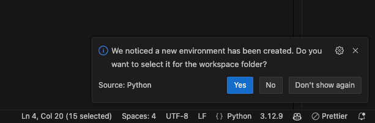
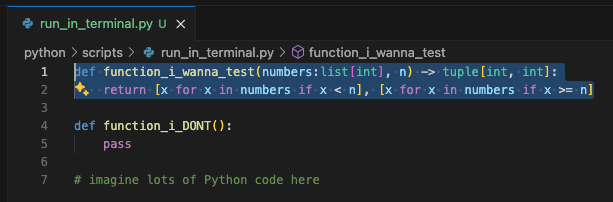

🎆 Strontium
Tärpit
Format Operator
Pythonin f-string on tehokas tapa formatoida merkkijonoja. Se on ollut käytössä Python 3.6:sta lähtien. F-stringin avulla voit lisätä muuttujia suoraan merkkijonoon. F-stringin tunnistaa siitä, että merkkijonon alkuun tulee f-kirjain. Esimerkiksi:
Huomaa, että yksinkertaisen muuttujan ujuttamisen lisäksi f-string sallii uskomattoman määrän muotoilua, ja tyypillisen Python-lausekkeen käytön. Esimerkiksi:
Voit tutustua tähän muotoiluun Python f-string cheat sheets -sivuston avulla tai suoraan Python Docs: String > Format String Syntax.
Mukavuus
Visual Studio Coden käyttö
Mukavuus-otsikon alla on oletus, että sinulla on käytössä Visual Studio Code, Python Extension ja lokaalisti asennettu Python 3.1x. Python voi olla Ubuntun mukana tullut, Python.org-sivustolta ladattu, uv-työkalulla asennettu tai jokin muu. Tärkeintä on, että Python on lisätty käyttöjärjestelmäsi PATH:iin ja on täten ajettavissa terminaalista komennolla python tai python3.
Venv
Warning
Pythonin virtuaaliympäristöt eivät ole maailman helpoin aihe. Tulethan läsnätunneille paikalle, jotta saat tähän tukea ja neuvoja!
Kun luot uudet Python-projektin Visual Studio Codessa, sinulla voi olla tarve asentaa joitakin moduuleita. Olet jo aiemmin oppinut, että Debian-pohjaisessa ympäristössä on dist-packages-hakemisto, jossa on esimerkiksi requests-moduuli asennettuna. Jos olet jossakin toisesssa käyttöjärjestelmässä tai jakelussa, se voi hyvin puuttua sinulta. Tässä tapauksessa tarvitset virtuaaliympäristön.
Virtuaaliympäristö kuulostanee monimutkaiselta, mutta käytännön tasolla se on kopio Python-asennuksesta. Luo se uv:n avulla:
Jos sinulla on uv, käytä ihmeessä sitä! Jos ei ole, asenna se. Asennus vaatii yhden komennon ajamisen, joka löytyy Uv uv:n etusivulta. Työkalu toimii Windowsissa, Linuxissa ja macOS:ssä samoin tavoin.
# Varmista, että olet projektisi hakemistossa
$ cd mene/sinun/projektisi/hakemistoon
# Mene ALIHAKEMISTOON python/
$ cd python
# Asenna haluamasi Python
$ uv install 3.12
$ uv pin 3.12
$ uv init --name "skriptiohjelmointi" --bare --app .
# Asenna virtuaaliympäristöön requests
$ uv add requests
# Aja uv:n hallinnoima Python
$ uv python scripts/hello.py
Tutustu syntyneisiin tiedostoihin, kuten .python-version ja pyproject.toml. Kysy opettajalta apua, jos jokin asia askarruttaa.
Jos sinulla on Windowsiin asennettuna Python 3.xx, etkä jostain syystä saa uv:ta asennettua, voit käyttää Python-osion tehtävissä venv-moduulia. Myöhemmin Ansible-osiossa käytetään kuitenkin uv:ta Linuxissa, joten tee tämä vain jos ei ole muita vaihtoehtoja!. Jos sinulla on uv tai mahdollisuus asentaa se, valitse ylhäältä uv-välilehti.
# Varmista, että olet projektisi hakemistossa
PS> cd mene/sinun/projektisi/hakemistoon
# Mene ALIHAKEMISTOON python/
PS> cd python
# Suositeltu: kiellä pip:n käyttö virtuaaliympäristön ulkopuolella
PS> pip3 config set global.require-virtualenv true
# Luo virtuaaliympäristö
PS> python3 -m venv .venv
# Aktivoi virtuaaliympäristö
PS> .venv\Scripts\Activate.ps1
# Asenna haluamasi moduulit
(.venv) PS> pip install requests
# Aja Python
(.venv) PS> python scripts/hello.py
# Deaktivoi virtuaaliympäristö
(.venv) PS> deactivate
Muista Git Ignore!
Ethän unohda lisätä kyseistä hakemistoa .gitignore-tiedostoon, jotta se ei päädy versionhallintaan! Se on kopio Pythonista, joten se sisältää satoja binääritiedostoja, jotka eivät todellakaan kuulu versionhallintaan. Kukin käyttäjä luo oman virtuaaliympäristönsä itse.
Lisää siis seuraava rivi .gitignore-tiedostoon:
Tarkista, että tiedostoja ei näy versionhallinnassa komennolla git status -u.
Huomaa, että on kaksi eri asiaa: käyttää virtuaaliympäristöä shell-istunnossa ja Visual Studio Coden GUI:ssa. Visual Studio Code yleensä havaitsee, jos luot virtuaaliympäristön, mutta ei aina. Visual Studio Code saattaa myös jatkossa aktivoida sen automaattisesti shell-istuntoon, mutta tämä riippuu asetuksesta:
{
// ...
"python.terminal.activateEnvironment": false,
// ...
}
Sen sijaan VS Coden GUI-editorin, eli ei siis integroidun terminaalin, käyttämä Python on valittavissa painamalla F1 ja kirjoittamalla Python: Select Interpreter. Yleensä VS Code avaa alla näkyvän (ks. Kuva 1) pop-up -ikkunan ruudun oikeaan alalaitaan kun olet luonut virtuaaliympäristön. Jos tämä popup menee sinulta ohi syystä tai toisesta, voit valita Workspace-kohtaisen virtuaaliympäristön painamalla F1 ja kirjoittamalla Python: Select Interpreter. Kenttään voi kirjoittaa relatiivisen polun projektin uudesta esimerkiksi näin: ${workspaceFolder}/python/.venv/. Tämä polun käsin kirjoittaminen on tarpeen vain, jos executable on jossakin muualle kuin avoinna olevan kansion juuressa (kuten python/.venv eikä .venv/).

Kuva 1: Visual Studio Code ilmoittaa, että se on havainnut uuden virtuaaliympäristön, ja tarjoaa sinun valita sen kyseistä worskpacea varten. Klikkaa Yes.
Intellisense
Aivan kuten PowerShell, myös Python on hyvin vahvasti object-oriented -kieli. Tämä tarkoittaa, että Pythonissa kaikki on objekteja, ja objekteilla on metodeja ja ominaisuuksia. Olet jo kokeillut samaa ominaisuutta PowerShellin kanssa, mutta kokeile uusiksi Pythonin kanssa. Luo esimerkiksi seuraava skripti:
Kun lisäät sanan name perään vielä pisteen, aukeaa lista objektin metodeista ja ominaisuuksista. Kokeile esimerkiksi name.upper(). Jos lista ei aukea, paina Ctrl+Space. Huomaa, että IntelliSense käyttää sitä Python-versiota, joka on valittu Visual Studio Codessa. Tämä neuvotaan yllä.
🍎 macOS
Sama pikanäppäin on Fn+Ctrl+Space
Run Selection
Joskus voi olla tarpeen ajaa valittu koodinpätkä lokaalin koneen terminaalissa. Kenties haluat nopeasti kokeilla, kuinka keskellä pitkää skriptiä määritelty funktio toimii ajamatta muuta koodia? Tämä onnistuu Visual Studio Codessa valitsemalla koodinpätkä ja painamalla Shift+Enter. Vaiheoehtoinen tapa on context menu. Klikkaa hiiren oikealla korvalla valittuja koodirivejä, valitse Run Python > ja Run Selection/Line in Python Terminal.

Kuva 2: Skripistä on valittuna vain yksi funktio, function_i_wanna_test, ja se ajetaan terminaalissa.
Kun ajat koodin näin, huomaat, että alle Terminal-kohtaan ilmestyy uusi Python-niminen terminaali, jossa koodi suoritetaan REPL-tilassa. Tämä on vastaava tapa kuin ajaa aiemmin näkemäsi python -i scripts/some.py, mutta voit valita juuri ne rivit, jotka haluat suoritettavaksi. Kuten alla olevasta snippetistä näet, funktio on jatkossa kutsuttavissa kyseisessä terminaalissa.
Tehtävät
Tehtävä: Arvaa numero
Luo ohjelma, joka generoi luvun väliltä 1-1000 ja pyytää käyttäjää arvaamaan sen. Ohjelma antaa vihjeen, onko arvattu luku suurempi vai pienempi kuin generoitu luku. Ohjelma lopettaa, kun käyttäjä arvaa oikein. Olet tehnyt ohjelman jo aiemmin (Bash ja PowerShell), joten voit lainata sieltä logiikan.
$ ./runpy.py scripts/arvaaluku.py
Arvaa luku väliltä 1-1000.
Muu syöte kuin positiviinen kokoluku poistuu ohjelmasta.
Syötä arvaus:
9
📉 Luku on pienempi kuin 9.
Syötä arvaus:
7
📈 Luku on suurempi kuin 7.
Syötä arvaus:
8
🎉 Oikein! Arvasit luvun 8. (Peliaika: 0h 4m 18s)
Varmista, että pelaaja voi halutessaan lopettaa pelin. Minun toteutuksessa mikä tahansa muu syöte kuin kokonaisluvuksi parsittava syöte lopettaa pelin (esim. exit tai tyhjä merkkijono).
⚠️ TÄRKEÄÄ
Kirjoita ohjelman input() ilman promptia. Anna prompti erillisellä print-komennolla. Tämä helpottaa kurssin myöhempää tehtävää, jossa rakennamme skriptin, joka pelaa peliä meidän puolestamme. Eli siis:
Tehtävä: Reminder
Tämän pitäisi olla sinulle jo tuttua. Luo kaksi ohjelmaa, jotka toimivat yhdessä. Toinen luo, toinen näyttää muistiinpanoja. Lisäksi on olemassa apuohjelma, joka lisää nämä PATH:iin.
install_reminder.py- Lisää
remindjaremembersymboliset linkit PATH:iin.
- Lisää
remember- Kysyy käyttäjältä muistutuksia, jotka tallennetaan
~/.reminder-tiedostoon. - Tyhjä syöte lopettaa ohjelman.
- Formaatti:
[YYYY-MM-DD HH:MM] Muistutus
- Kysyy käyttäjältä muistutuksia, jotka tallennetaan
remind- Tulostaa muistutukset
- Antaa mahdollisuuden poistaa muistutuksia TUI-käyttöliittymällä.
Käytä TUI:n (Text User Interface) luomiseen curses-moduulia. Moduuli tulee Pythonin mukana Unix-like -järjestelmissä, joten sitä ei tarvitse asentaa erikseen.
Lopulta käyttö näyttää tältä, kun komennot ajetaan kontin sisällä (python runpy.py --bash):
# python scripts/install_reminder.py
Created symbolic link: /usr/local/bin/remind -> /app/scripts/remind.py
Created symbolic link: /usr/local/bin/remember -> /app/scripts/remember.py
# remember
Enter a reminder: Learn Bash
Enter a reminder: Learn PowerShell
Enter a reminder: Learn Python
Enter a reminder: Eat spam
Enter a reminder:
Goodbye 👋! To view reminders, run: remind
# remind
ks. kuva alta
Kuva 3: Muistutusten lisääminen ja poistaminen TUI:n avulla.
Executable
Huomaa, että sinun tulee tehdä skripteistä suoritettavia host-koneellasi, sillä kontissa kyseinen volume on read-only. Jos teet tätä kurssin osuutta Windowsista käsin, etkä voi tehdä tätä, luo skripti siten, että se luo symbolisen linkin sijasta aliaksen:
Kuinkahan tämä onnistuu Pythonissa?
Opettajan versio
Alla on opettajan versio siten, että osa riveistä on jemmattu. Muista, että tällä kurssilla koodin ymmärtäminen on tärkeää. Jos opettaja kysyy sinulta, mitä jokin rivi tekee, osaatko vastata?
#!/bin/env python3
import curses
from pathlib import Path
TARGET = Path("~/.reminder").expanduser()
def load_reminders() -> list[str]:
pass
def save_reminders(reminders: list[str]):
pass
def filter_and_save(reminders: list[str], sel: set[int]):
kept_reminders = [
rem for idx, rem in enumerate(reminders) if idx not in sel
]
save_reminders(kept_reminders)
def draw_menu(stdscr: curses.window, rem: list[str], curr: int, sel: set[int]):
stdscr.clear()
stdscr.addstr(
0, 2, "Press SPACE to mark as done, Q to save and quit", curses.A_BOLD
)
for idx, reminder in enumerate(rem):
# Highlight the current row
attr = curses.A_REVERSE if idx == curr else curses.A_NORMAL
# Add checkboxes
if idx in sel:
button = "[X] "
else:
button = "[ ] "
stdscr.addstr(idx + 2, 2, button + reminder, attr)
def reminder_app(stdscr: curses.window):
curses.curs_set(0) # Hide text cursor
stdscr.keypad(True) # Enable arrow keys
stdscr.clear()
reminders = load_reminders()
if not reminders:
raise SystemExit("No reminders found!")
selected = set()
current_row = 0
while True:
draw_menu(stdscr, reminders, current_row, selected)
# Get event
key = stdscr.getch()
if key == curses.KEY_UP and current_row > 0:
current_row -= 1
elif key == curses.KEY_DOWN and current_row < len(reminders) - 1:
current_row += 1
elif key == curses.KEY_RIGHT:
selected.add(current_row)
elif key == curses.KEY_LEFT:
selected.remove(current_row)
elif key in (ord("Q"), ord("q")):
filter_and_save(reminders, selected)
break
if __name__ == "__main__":
curses.wrapper(reminder_app)
Tehtävä: breakpoint()
Koska käytämme Visual Studio Codea, voimme käyttää sen interaktiivista debuggeria CLI-pohjaisen Pdb:n (Python Debugger) sijasta. Tämän käyttö esitellään läsnätunneilla. On kuitenkin suositeltavaa kokeilla Pdb:tä lyhyesti ihan sivistyksen tähden. Vastaavia työkaluja löytyy myös muista kielistä, kuten Pdb:n esikuva GDB, joka voi käyttää useissa kielissä: C, C++, Rust ja moni muu.
Yksi tapa aktivoida Pdb on sijoittaa skriptiin alla olevassa code snippetissä oleva rivi. Rivin voi tarpeen mukaan ujuttaa useisiin paikkoihin, jolloin debuggeri pysähtyy jokaisen rivin kohdalla.
Koodi pysäyttää suorituksen kyseiseen kohtaan ja avaa Pdb:n. Tässä tilassa ei ole tarkoitus kirjoittaa interaktiivisesti Pythonia vaan tarkkailla muuttujien arvoja esimerkiksi looppia ajettaesa.
#!/usr/bin/env python3
n = 5
counter = 0
for i in range(n):
breakpoint()
counter += 1
$ ./runpy.py scripts/breakpoint_practice.py
(Pdb) p counter
0
(Pdb) continue
> /app/scripts/breakpoint_practice.py(8)<module>()
-> counter += 1
(Pdb) p counter
1
Debuggerissa toimivat muiden muassa seuraavat komennot [^pdb]:
[^pdb] Python Docs. The Python Debugger. https://docs.python.org/3/library/pdb.html
Peruskomennot
| Komento | Kuvaus |
|---|---|
| `h(elp) | Näytä ohjeet (eli kaikki nämä komennot) |
| `q(uit) | Poistu debuggerista |
c(ontinue) |
Jatka suoritusta seuraavaan breakpointtiin asti |
n(ext) |
Suorita seuraava rivi (astu funktiokutsun yli) |
s(tep) |
Astu funktiokutsuun |
r(eturn) |
Suorita loppuun nykyinen funktio |
Tarkastelu
| Komento | Kuvaus |
|---|---|
l(ist) |
Näytä koodi breakpointin läheisillä riveillä |
p expr |
Tulosta lausekkeen arvo |
pp expr |
Tulosta lausekkeen arvo (prettify) |
whatis |
Näytä lausekkeen tyyppi |
Lauseke (engl. expression) on usein muuttuja, mutta voi olla myös esimerkiksi funktio tai moduuli.
Tehtävä: IP Address
Kirjoita Python-skripti, joka:
- Käyttää built-in kirjastoa
ipaddress. - Kysyy käyttäjältä IP-osoitteen CIDR-notaatiolla (esim.
192.168.0.12/24). - Tulostaa seuraavat sekä desimaali- että binäärimuodossa:
- Verkon osoite
- Verkon maski
- Ensimmäinen host ip
- Viimeinen host ip
- Broadcast ip
Alla esimerkki käytöstä. Huomaa, että tulosteen ei tarvitse olla merkistä merkkiin muotoiltu samalla tavalla.
./runpy.py scripts/cidr_range.py
Enter a network (CIDR notation): 10.0.2.42/23
Label IP Address Binary
---------------------------------------------------------------------
Network: 10.0.2.0 00001010 00000000 00000010 00000000
Netmask: 255.255.254.0 11111111 11111111 11111110 00000000
First IP: 10.0.2.1 00001010 00000000 00000010 00000001
Last IP: 10.0.3.254 00001010 00000000 00000011 11111110
Broadcast: 10.0.3.255 00001010 00000000 00000011 11111111
Host-ip verkon osoitteeksi
Verkon osoite on se osoite, joka on ensimmäinen mahdollinen osoite kyseisessä verkossa. Käyttäjä saattaa ajatuksissaan antaa osoitteen, joka ei ole verkon vaan yksittäisen laitteen ip, kuten yllä olevassa esimerkissä (192.168.0.12/24). Saat muunnettua tämän verkon osoitteeksi käyttämällä network_address-metodin parametrina strict=False.
Missä IP:t?
Huomaa, että network.broadcast_address palauttaa IPv4Network-olion. Kenties keksit käyttöä seuraaville:
network.broadcast_addresslist(network.hosts())palauttaalist[IPv4Address]sisältäen vain hostitint(some_ipv4)palauttaa desimaalimuodossa olevan ip:n
IP neljäksi oktetiksi
Mikä tahansa numero on helppo tulostaa 32-bittiä pitkänä binäärinä. Se onnistuu f-stringin avulla ({int(ip):032b}). Sen tulostaminen 4 eri osassa, eli oktetissa, vaatii hieman koodia, mutta parantaa tulosteen luettavuutta. Tämän voi luonnollisesti tehdä monella tapaa. Alla helppolukuinen tapa:
def ip2bin(ip: ipaddress.IPv4Address) -> str:
"""
Convert an IPv4 address to binary format with whitespace between octets, like:
10000001 10000001 10000001 10000001
"""
bit_32 = f"{int(ip):032b}"
octets = []
for i in range(0, 32, 8):
octet = bit_32[i : i + 8]
octets.append(octet)
return " ".join(octets)